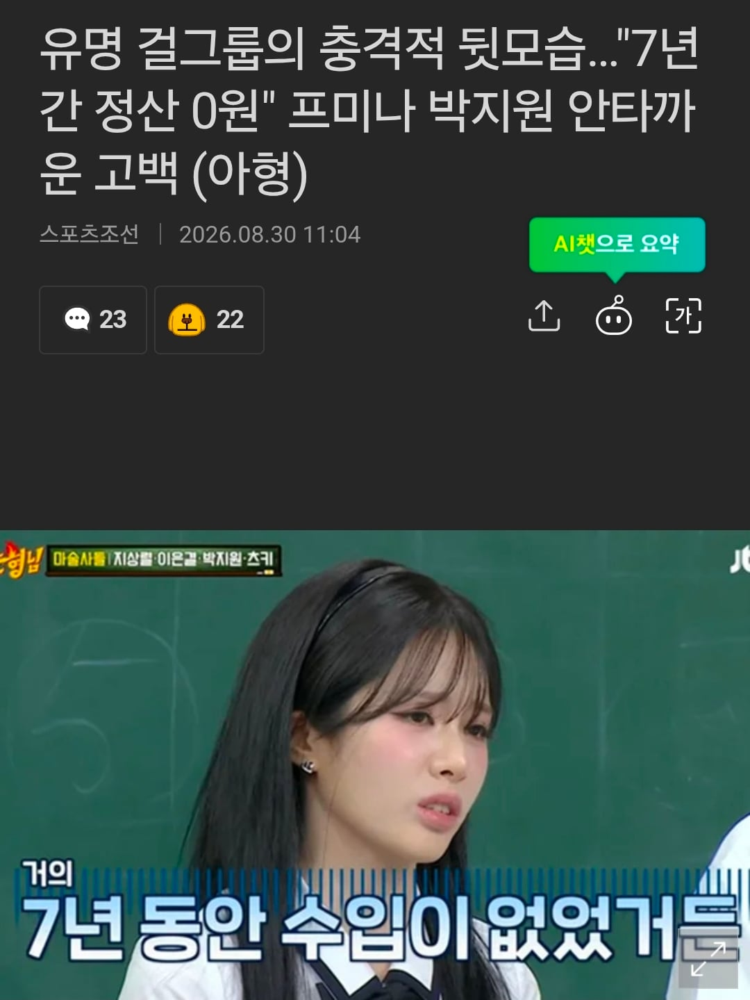
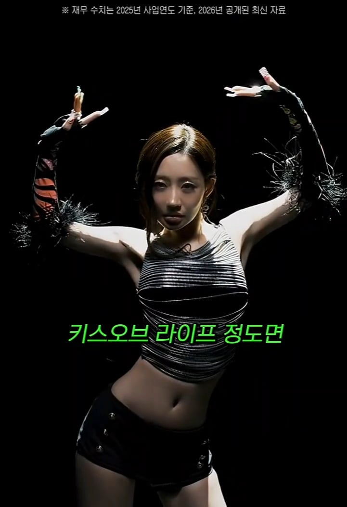
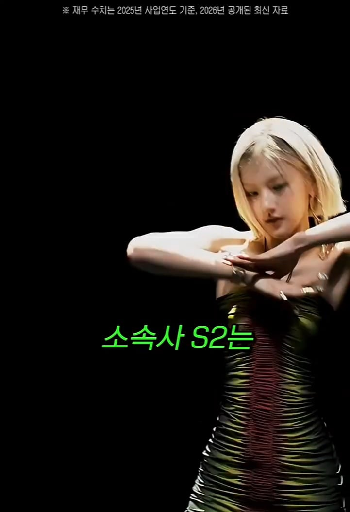
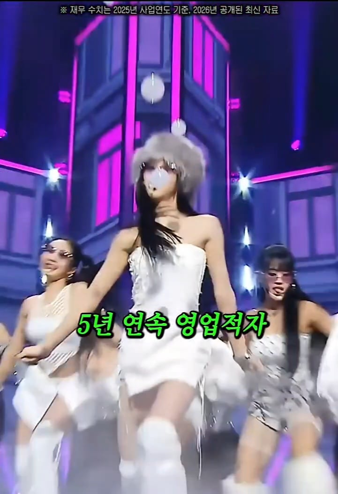
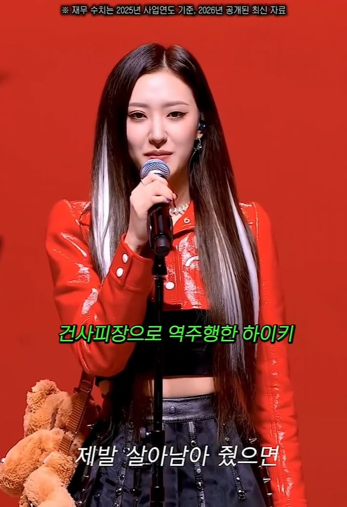
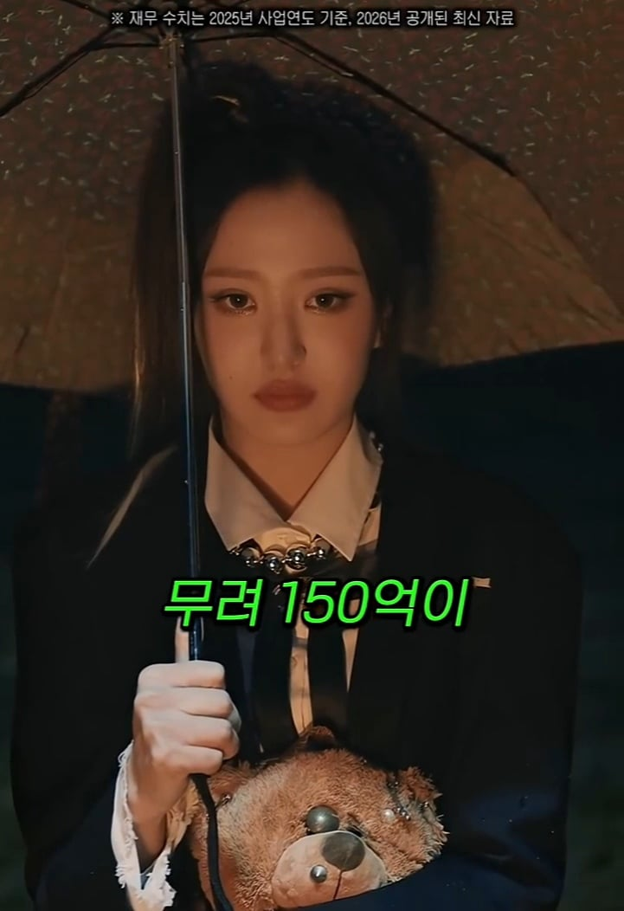
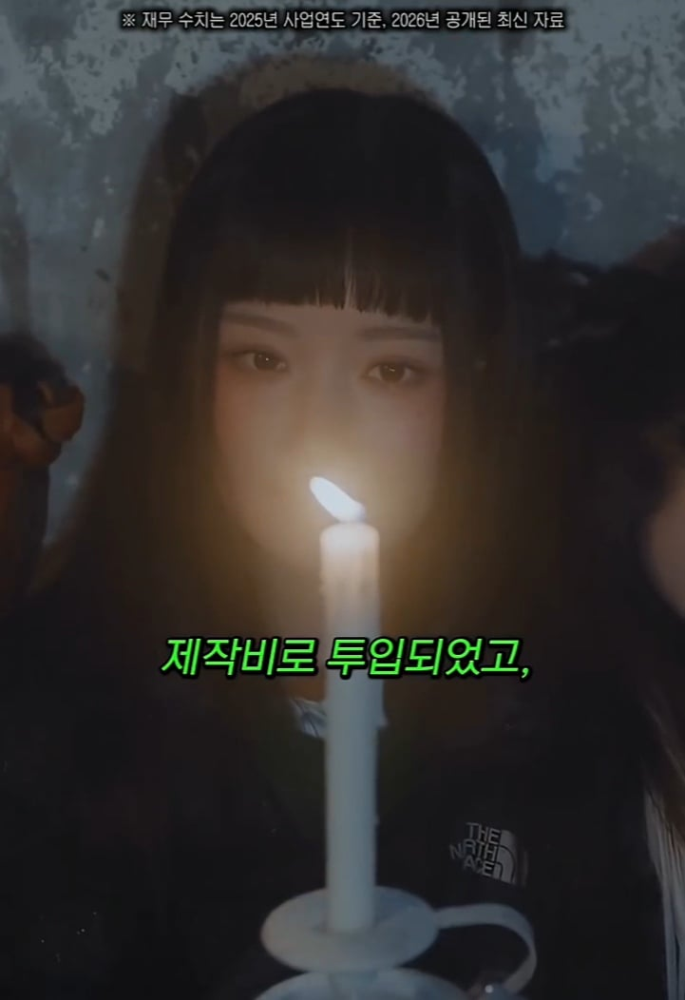
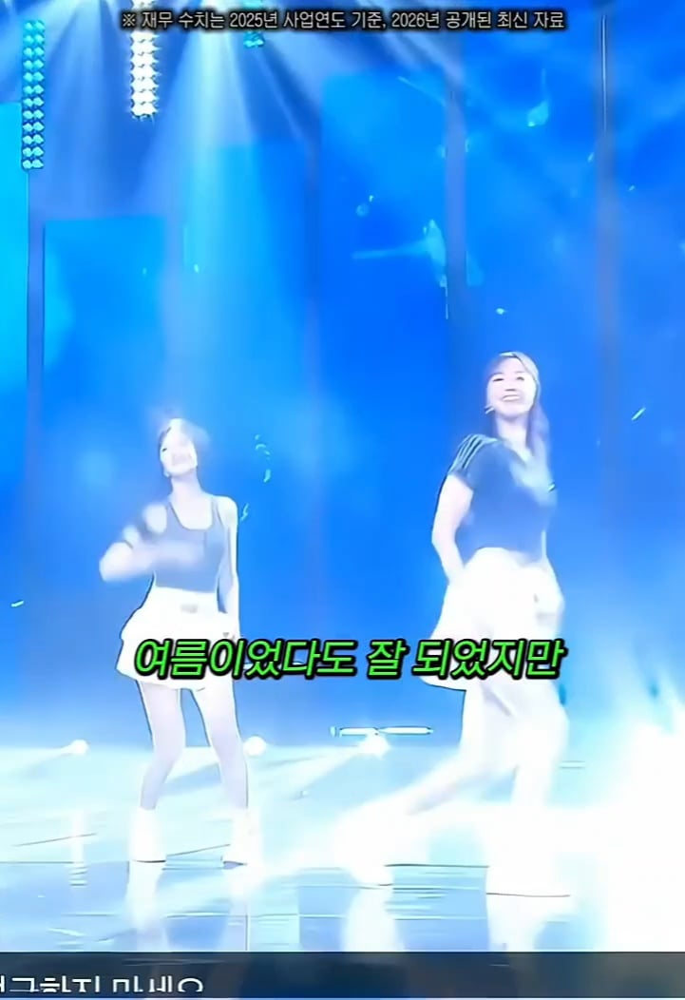
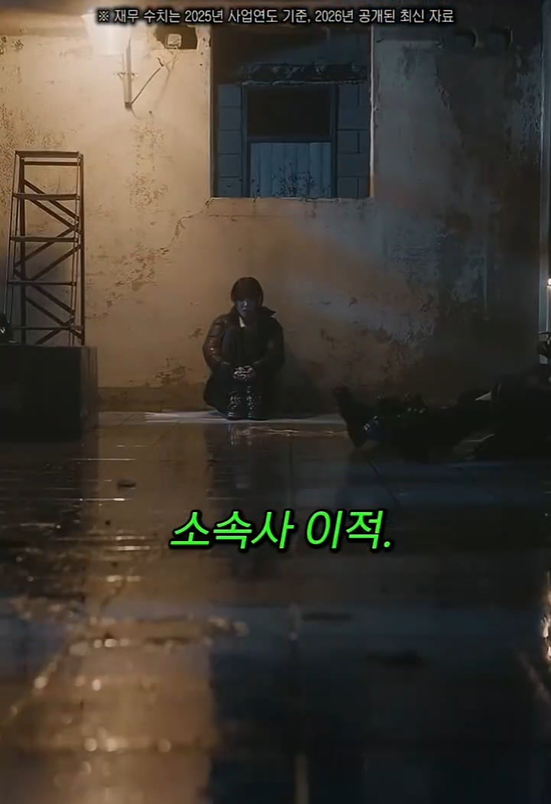
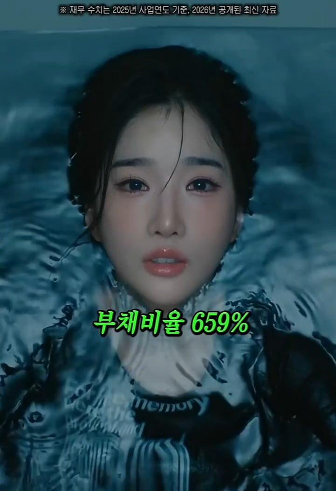
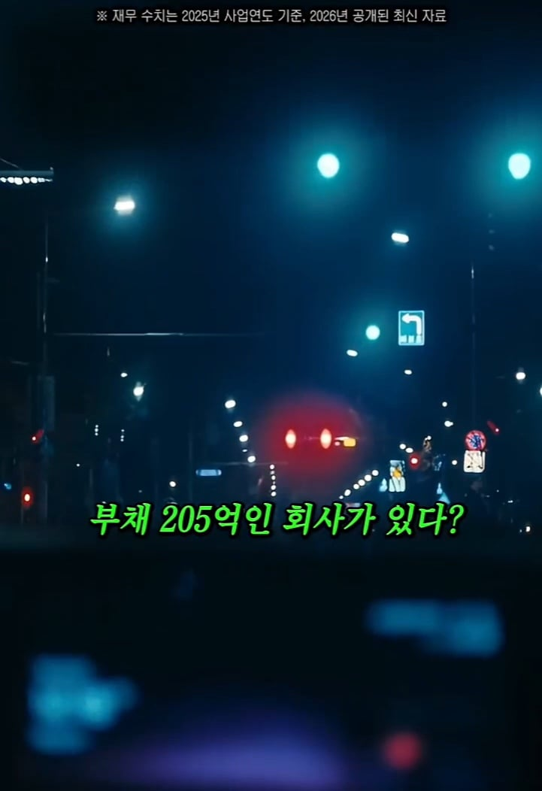
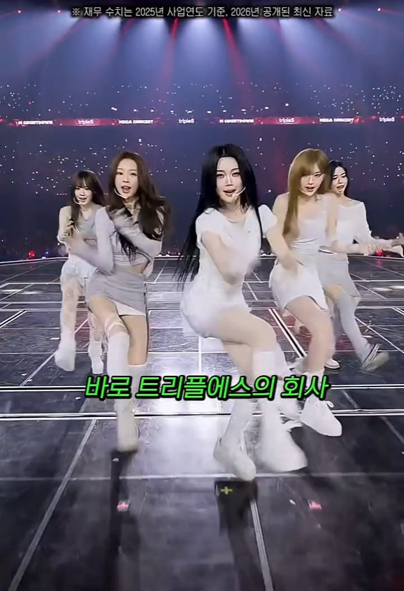
메가히트 못치고
중박 치면 적자나고
다음 컴백때도 짜치게할수없으니
투자금박고 또 적자반복
소속사도 망하고 아이돌도 정산못받는
적자의 구렁텅이












메가히트 못치고
중박 치면 적자나고
다음 컴백때도 짜치게할수없으니
투자금박고 또 적자반복
소속사도 망하고 아이돌도 정산못받는
적자의 구렁텅이
키오프는 사옥 짓고 다음 아이돌 키우느라 투자해서 적자인 거고 사실상 저긴 성공 이미 첫정산도 예전에 끝났드만
프미나는 그 오디션 방송으로 만들었는데 그거 까느라고 정산 늦어진 걸로 앎
키오프는 첫정산 끝나서 이제 딱 0원 되었는데 손가락만 빨수는 없자나
그리고 최근에 초동이나 이런거 꺾여서 분위기가 좋지는 않을 것임
아이돌은 회사가 운영하는 것이고 기업은 가만히 있어도 비용이 나감
쟤들 생활비, 무대 비용 이런 일상 비용만 해도 금액이 상당한데
가만히 있으면 적자지
프미나는 걍 인기가 없었는데 얘들 팬들은 메타인지가 박살났는지
맨날 기존 계약이 어쩌고 비용이 어쩌고 하는데 그냥 인기가 없어서 돈을 못 번거임
시작 자체가 조작 논란 때문에 치고 나가기도 어려웠고
멤버는 9명이라서 적은 편도 아닌데 처음으로 터진 곡이 2024년 슈퍼노닉임
그것도 터졌다는게 그나마 터진게 1위는 찍지도 못 했음
최근에 5인 멤버로 바뀌고 그나마 예능 뛰면서 뭐 어찌저찌 사는데
최근 앨범 초동이 10만장 겨우 넘겼고, 멜론 Top 40인지 50인지 겨우 들었음
얘들은 아예 해외 인지도가 없는 수준이라 국내 멜론이 엄청 중요한데
Top10에도 못 들었다는 것은 대중적인데 코어가 아예 없다는 이야기임
엔터판 2년전쯤부터 일 관련되어서 리서치를 계속해야 하다보니 돌아가는게
그래도 얼추 보이는데 프미나 지금 수준이면 얘들 돈 버는거 쉽지 않을거다
키오프 얘낸 애초에 큰 파이가 해외였음 첫 정산도 해외투어로 티켓 팔아 성공한 거고
사실상 3년 가까이 될 쯤 중소에서 정산 받는다는 건 하늘의 별따기 수준인데 계산기 때리면 인당 대략 6억 정도 받음
게다가 추가로 투자금만 50억원 받았기 때문에 딱 0원이 되었다는 말은 틀린 소리임
그렇게 투자를 받고 체급을 올려 회사를 부풀리고 새로운 그룹을 론칭하면서 투자금 받고 돈을 버는 구조가 엔터업계니까
게다가 앨범 반응 안온다고 손가락만 빠는 게 아니라 각종 행사 축제 광고 투어 등 할 거 다하는데 당연 메꾸고도 남지
프미나 얘내도 멤버 수 줄어들고 중소 여돌치곤 코어가 있는 편이라 앨범 꾸준히 내고 먹고 사는 데엔 지장이 없음
게다가 요즘은 숏츠 시대로 개개인 얼굴 좀 알리고 바이럴 된 편이라 당장 각자도생 하더라도 몇년간은 잘먹고 잘살껄
뭐 블랙핑크 트와이스 이런 경우의 수를 찾는 거면 걔낸 애초에 회사가 다르니까 논외인거고
옛날이야 음원뜨면 행사같은걸로 매출올렸는데 코로나 이후로 인건비 올라서 큰 수익이 안남
그래서 대형은 북미나 해외 진출에 열 올리는거고 중소는 그게 어려우니 적자나는거
아이돌 키우기 너무 하이리스크 아녀?
남돌해야지. 여돌은 개노답
남돌도 답없음ㅇㅇ
심지어 프미나는 소속사 옮기기 전까지 하이브 소속이였어서 중소돌도 아니였음
망해도 너무 크게 망하는데 소속사 사장님은 망하면 파산신청하나
이런거보면 리센느는 진짜 대박이구만
피프티는 도대체...
노래뜨고나서 아무활동안했어도 정산받을정도 였는데....
그래서 더 눈이 뒤집어진거겠지...
소비자가 눈이 높아져서
뮤비나 헤메,코디 같은것들도 퀄리티 좋아야 해서 드는 돈도 점점 더 많아지니
이제 여돌은 특히 국내 떠 봤자 의미가 없음
일본시장을 잡아야 함
프미나는 지금은 괜찮은 거 같더라.
다른 그룹은.. 진짜.. 이게 잠깐 대박치더라도.. 꾸준히 안뜨면 다음 앨범제작에 들어간돈이 어마어마하고..
트플 소속사는 부채 대부분이 선수금이라서 그거 감안하면 심각한 수준은 아니고 개인별로 따로 정산받는게 있어서 아예 거지는 아님
트리플에스 같은 경우는 한국 시장뿐 아니라 처음부터 해외 시장까지 노리고 런칭한 걸로 보이긴 함. 멤버 중에 누구든 하나 걸리라는 식으로 다수를 구성해서, 해외 취향을 타겟하지 않았을까 싶음
피프티 피프티가 2군급 될 것 같은데, 여기 소속사가 작년 매출 142억에 영업이익 38억, 당기순이익 29억 찍음. 그나마 작년 돼서야 22~24년 빵꾸난 거 딱 메꾼 정도.
피프티는 커뮤 반응만 보면 위에 언급된 아이돌들보다 망한거 같은데 흑자 찍었다는거 보면 확실히 커뮤 유명세보다 공연이랑 콘서트 가능한 소비층 확보가 중요한것 같음
이래서 어설프게 유명한 여돌보다 코어 탄탄하고 안유명한 남돌이 더 번다고 하나봐
해외 저작권료는 아직도 음저협에 묶여 있다고 알고 있는데 작년에 딱히 대박친 활동이 없는데 그만큼 영익 찍은 거 보면 얘네 활동에 뭔가 특이한 게 있었나 싶기도 함
타 걸그룹대비 영화 드라마 OST 활동한 게 컸나?
트리플에스는 멤버가 24명이던데 행사뛰고 n빵하면 남는 돈이 있긴 하려나 ㄷㄷㄷ
얘네는 대신 행사를 6명 / 8명 이렇게 유닛으로 쪼개서 투배럭 돌림
트리플에스는 연습생생활부터 자기PR해서 투표받고 앨범돌리는거라 오히려 정산은 빨리받았을거임
트리플에스 소속사가 트리플에스만 소속된게 아니라
기존의 이달소 멤버들 있는 아르테미스라고 5명 있는 여돌 있고
아이덴티티라고 남돌 24명 있는 그룹이 있음
그렇게 다인원 그룹만 2개에 소속된 연예인만 40명은 넘으니 적자지
엥간히 떠도 손해면 여돌 장사 왜함?
존나 뜨면 쓸어먹으니까
국내 1황급으로 가면 수백억
세계급으로 가면 수천억 수익 나니까
인생을 건 한탕인거지
프미나는 지금 돈 잘벌잖아
그동안 손해 다 메꾸고 정산 달달하게 들어갈걸
소속사가 바뀌고 엄청챙겨주고 돈도많이써서
프미나 팬이 차린거 아니냐 하던데 ㅋㅋㅋ
에이 말은 똑바로해야지. 트리플에스로는 흑자전환 됐음. 남자버전 24인조 만드느라 거기서 다시 초기투자 발생한거
흑자전환 관련 기사좀
태클이아니라 찾아도안나와서 궁금
걍 검색하니까 2024년에 첫 흑자전환 성공했다는 뉴스 뜨네.
http://m.thebell.co.kr/m/newsview.asp?svccode=00&newskey=202605130153484610102274
25년은 적자인데?
https://m.dcinside.com/mini/hitthefloor/134972
리센느는 당장 아이돌 접고 유튜브만 해도 다 뽑을듯
아이돌 접고 유튜브만 하기에는... PD나 소속사 들인 투자금이나 맴버들 정산 생각하면 사실 유튜브만 해도 손해거나 또이또이일 거 같은데
아이돌 보면 콘서트나 행사 수입은 기본으로 깔아야 어느정도 수익이 나는 거 같더라고 대형 유튜버들도 보면 강연 많이 댕기고 광고 엮어야 수입이 대박으로 올라가는 모양세인 듯 하더라고
물론 백만 유튜버가 적게 버는 건 아닌데 어찌 됐던 유튜브 운영하는데 맴버 5인 + PD + 편집자 이렇게만 해도 벌써 7명인데 어찌됐던 소속사는 투자를 우리가 생각하는 거 보다 많이 했을거 같음
프미나는 첨에 오디션 프로그램 적자까지 포함되어 버려서 수익 까지가 엉청 높지
이제 일본처럼 지하아이돌
리센느 같은 케이스 나와서 앞으로도 중소돌은 영원히 마르지 않는다...
설마 우리도? 해볼만 하겠는데?
프미나는 중간 수납 기간이 참 힘들었을듯
근데 이렇게 리스크 있는 산업에 누가 투자해주는거임? 성공확률 3%도 안되보이는데 사모펀드가 투자하나
그래서 맨날 사장이 집 담보 했다 차 팔았다 저작권 팔았다 하는 뉴스 나오는 거 ㅋㅋㅋ
대형이라 한두번 꼬꾸라져도 기회 있는 곳 아니고서는
진짜 올인 때리는거라 7년 안에 본전은 맞춰야해서 뜨든 안뜨든 행사든 축제든 존나 돌리는 거
상위 0.1프로되는게 좇으로 보이나? 왜 수십억 수백억 배팅을 하는걸까? 그리고 아이돌 하려는 애들도 대부분정산도 못받고 웬만해선 좇망인거 알면서 왜 하는걸까?
아이돌 자체는 어지간 하면 인생이 망하진 않을거 같은데? 걍 결혼하면 되잖아 소속사가 망하는 거면 몰라도
인생자체는 망하지 않겠지만 직업으로서는 좇망이지 공부도 포기하고 십대 이십대초반을 다 태워서 몰빵했는데 돈도 못벌고 아무스팩도 없이 다시 맨땅에 헤딩해야하잖아

아이돌 사업자체가 너무 레드오션인가봄